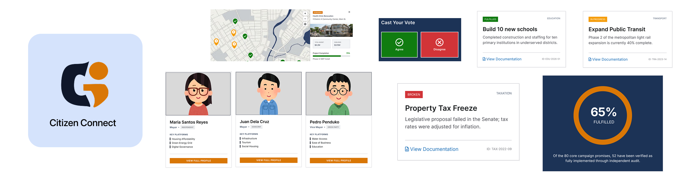
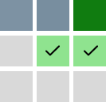
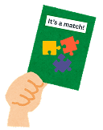

Citizen Connect — Inform. Vote. Track
Bridging the gap between voters, candidates, and elected officials through open data and political accountability dashboards.
Visual Designer
Self-paced (Redesign)
Notion
Affinity
Canva
Data Visualization
Interaction Design
Bridging the gap between public trust and political accountability.
Democracy relies on informed citizens, yet our current civic systems suffer from a massive transparency gap. Citizen Connect was created to solve two distinct, real-world problems that happen before and after election cycles:
Pre-Election
(Empowered Voting)
During election cycles, voters are inundated with noise, campaign rallies, and unverified social media claims. Finding objective information about a candidate's background, platform, and actual track record is a frustrating, fragmented process.
Post-Election
(Accountability & Transparency)
Once election day passes, elected officials slip behind closed doors. Voters lose all visibility into whether campaign promises are actually being fulfilled or if local city budgets are being managed responsibly.
One platform, two distinct operational modes.
To address both the pre-election voting phase and the post-election accountability phase, the platform's information architecture is divided into two core modes. Users can seamlessly switch modes depending on the current political cycle.
Pre-Election Mode:
Empowered Voting
Candidate Profiles
Objective platforms, voting records, and education history.

Policy Stance Matrix
Stances on key local issues like transit, education, and resilience.

Priority Matcher
Rank the local issues you care about most, and instantly see which candidates prioritize those same developments in their campaign platforms
Governance Mode:
Post-Election Accountability
Promise Tracker Dashboard
Visual status meters tracking campaign promises with transparent status tags.
Legislative & Ordinance Log
A history of sponsored laws, authored resolutions, and official votes.
Project & Budget Map
An interactive city map showing ongoing infrastructure project updates, contractors, and expenditures.
Community Project Referendums
A direct voting tool where citizens cast an "Agree" or "Disagree" vote on newly proposed city projects, showing officials exactly where the community stands on new proposals.
Designing a secure, non-partisan platform for public trust.
In Civic Tech, credibility is everything. If a platform feels biased, has unverified data, or is easily manipulated by bots, public trust is instantly lost. Our UX strategy balances user simplicity with rigorous trust and security countermeasures:
UX Strategy: Solving Voter Friction
Comparing Vague Platforms
Voters find candidate stances vague, wordy, and extremely difficult to compare side-by-side.
We enforce identical stance categories (Agree/Disagree) and display them in a clean comparison table, cutting out empty campaign jargon.
The Post-Election Memory Gap
Once election day passes, citizens completely lose track of what was promised during the campaign.
A visual dashboard with clear status badges (Fulfilled, In Progress, Broken) linked directly to official municipal records.
Complex Budget Data
Raw government expenditure spreadsheets are too complex and boring for the average citizen to understand.
Translating dry spreadsheet numbers into localized map pins showing progress percentages and photos of active construction.
Building a bulletproof platform for political accountability.
When dealing with elections and government expenditure, the stakes are incredibly high. A single false achievement, bot-ridden poll, or accusation of bias can destroy the platform's credibility overnight. To protect the integrity of Citizen Connect, we designed active security countermeasures directly into the user interface:
Threat: Falsified Achievements
Candidates or partisan users submitting fake accomplishments or scrubbing past controversies.
Every platform stance or completed promise card displays a mandatory 'Citation Link' badge pointing directly to primary source documents.
Threat: Partisan Bot Spamming
Bot networks or paid accounts spamming ratings, upvoting biased questions, or skewing referendums.
Users must complete a one-time ID/OTP verification to earn a 'Verified Voter' badge, which is required to participate in project polls or referendum voting.
Threat: Accusations of Platform Bias
Accusations that the platform favors one candidate by placing them at the top of lists.
Candidate lists shuffle order on every page refresh to guarantee equal visual priority and exposure.
Threat: Fake Project Progress Reports
Contractors or city officials reporting a project is 'Completed' when it's delayed or abandoned.
Project status changes on the map require timestamped upload verification (e.g., site photos and budget receipt links) before the status can change to 'Completed'.
A component library built for open-data transparency.
Designing for public trust requires clarity above all else. We built a robust component library focused on high legibility, clean data visualization, and instant status color-coding.
Color Palette
Typography
Inter Bold - 32px
Inter Medium - 18px
Inter Regular - 14px. Citizen Connect empowers voters through data transparency.
UI Components Library
Candidate Name
| Legislation | Sponsor | Status |
|---|---|---|
| HB-2041: Public Works Transparency Act | Rep. J. Smith | In Progress |
Bridging complexity with public usability.
The final high-fidelity designs for Citizen Connect focus on turning dense, intimidating civic data into engaging, interactive interfaces. The platform is built around two core operating states:
Pre-Election Mode (Empowered Voting)
Objective platforms, voting records, and education history.
Stances on key local issues like transit, education, and resilience.
Rank the local issues you care about most, and instantly see which candidates prioritize those same developments in their campaign platforms.
Governance Mode (Post-Election Accountability)
Visual status meters tracking campaign promises with transparent status tags.
A history of sponsored laws, authored resolutions, and official votes.
An interactive city map showing ongoing infrastructure project updates, contractors, and expenditures.
A direct voting tool where citizens cast an "Agree" or "Disagree" vote on newly proposed city projects, showing officials exactly where the community stands on new proposals.
What I've Learned
Simplyfying Data Complexity
Civic tech is incredibly dense. I learned how to translate heavy datasets such as municipal budgets and campaign promises into scannable visual patterns (progress rings, map pins) that anyone can read.
Transparency builds trust
Giving residents step-by-step progress tracking of their municipal requests removes the feeling of bureaucracy and dramatically increases participation.
Stepping up to the challenge = the best chance to learn
Originally, designing a massive dual-mode web platform was outside my comfort zone. But by taking on the challenge, I was able to push my limits and grow rapidly.
What's Next?
Future roadmap items planned for Citizen Connect.
Offline SMS Ticket Submission
Allowing users without active smartphone data connections to report municipal problems using offline text message syntax parsed automatically by our dashboards.
Multi-Lingual AI Audio Feeds
Integrating voice translations and transcription streams into public town halls, allowing diverse cultural communities to fully participate in real-time discussions.
Open API Data Feeds
Publishing anonymized city repair ticket sets via open APIs so independent developer communities can build secondary tracking charts or map utilities.